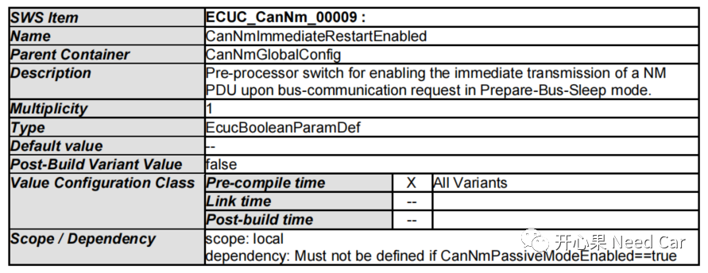
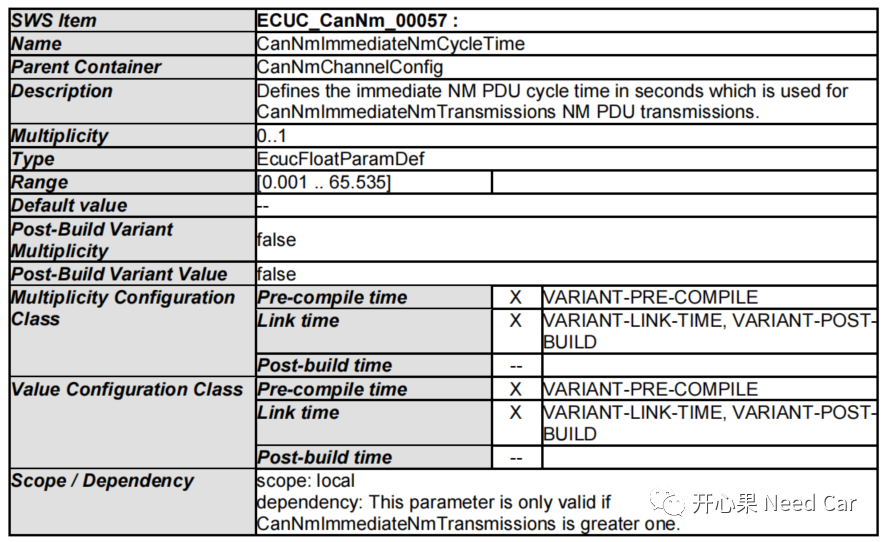
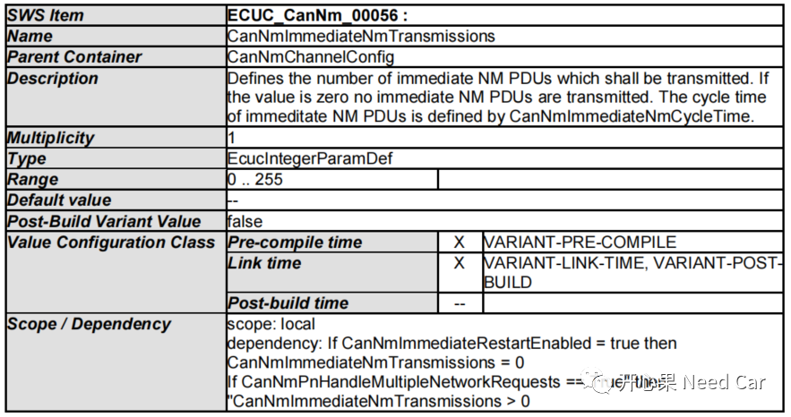
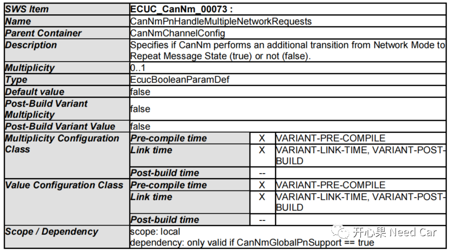
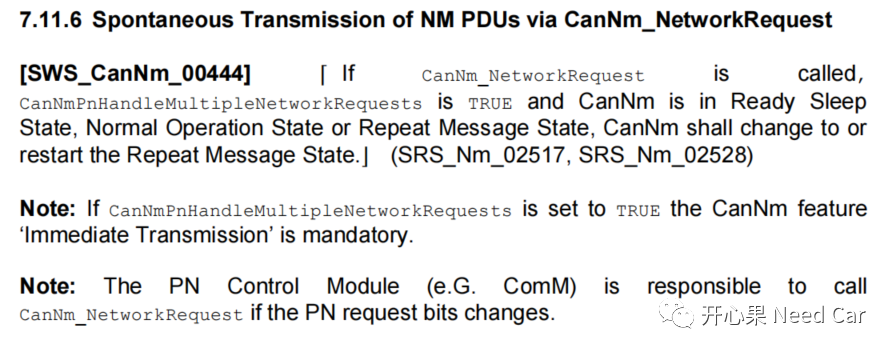
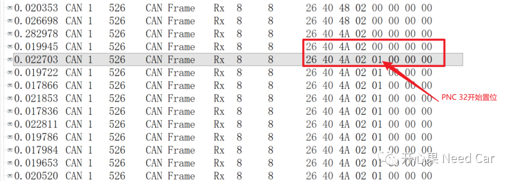

开心果 Need Car · 2023-08-14T20:02:00+08:00 · 微信原文
“你永远不可能真正的了解一个人，除非你穿上他的鞋子走来走去，站在他的角度思考问题，可当你走过他的路时，你连路过都觉得很难过”——《杀死一只知更鸟》
Autosar网络管理，让人"爱"又让人"恨"，爱和恨取决于你能顿悟多少。就开发配置部分而言，网络管理配置的内容不多，但是，这并不意味着网络管理就很容易搞懂。真正想消化好网络管理，需要把每一个细碎的点“垒”起来。本文，继续细细碎，聚焦主动唤醒这个概念。
提示：基于CAN总线讨论
关于主动唤醒的概念，之前的文章就有讨论，可以参考前文《Autosar网络管理：主动唤醒源/被动唤醒源与网络主动唤醒/被动唤醒的关系》。
主动唤醒：当节点需要与其他节点通信，主动唤醒网络的行为称为主动唤醒。eg：网络节点（Gateway）承担着网段唤醒的责任，主动请求网络通信。
主动请求网络的表现：主动请求CanNm_NetworkRequest()接口，发送的网络管理报文中，AWB（Active Wakeup Bit）置位。关于CBV（Control Bit Vector）具体解释，可以参考前文《Autosar网络管理：网络管理报文CBV(Control Bit Vector)字节详解》。注意：对于被动唤醒节点，网络唤醒需要调用接口CanNm_PassiveStartUp()，进入NM（Network Mode）模式。
Q1：NM PDU快发模式与主动唤醒关系

提示：使能网络被动唤醒模式时（CanNmPassiveModeEnabled==true），快发模式不可用，即：被动节点没有快发模式，因为被动节点不能发送网络管理报文，只能被动接收其他节点的唤醒请求，eg:网络管理报文。
（2）CanNmImmediateNmCycleTime，参数解释如下：

提示：CanNmImmediateNmCycleTime表示快发的周期，eg：20ms。具体周期是多少，取决于客户的需求输入。
（3）CanNmImmediateNmTransmissions，参数解释如下：

提示：CanNmImmediateNmTransmissions表示快发的次数，eg：10。具体次数是多少，取决于客户的需求输入。
（4）CanNmPnHandleMultipleNetworkRequests，参数解释如下：

提示：如果参数CanNmPnHandleMultipleNetworkRequests使能，则快发模式强制使能，且CanNmImmediateNmTransmissions必须大于0，对应规范解释如下：
CanNmPnHandleMultipleNetworkRequests生效，需要使能PN（Partical Network）功能，即：CanNmGlobalPnSupport == true。
Q2：新的PNC #n置位 == 主动请求网络？
A2：是的。当使能PN功能以后，如果网络管理报文中，有新的PNC #n置位，则ComM需要主动调用CanNm_NetworkRequest()接口，请求网络状态切换。即：如果节点处于RSS（Ready Sleep State）、NOS（Normal Operation State ）或者 RMS（Repeat Message State）状态，节点需要重新进入RMS状态，以此同步各个节点的网络状态。
规范解释如下：

如何理解新的PNC #n置位呢？如下图，网络中，之前的网络管理报文中，PNC 32 = 0，在某个时刻，需要唤醒此网络簇时，将PNC 32置位（=1），此时就是新的PNC #n置位。新的PNC #n置位，意味着需要切换网络状态，即：各个相关的网络簇节点进入RMS状态，以此实现局部网络簇的网络状态同步，同时，主动唤醒节点如果有快发模式，需要快发。新的PNC #n置位示意如下所示：

往期精彩回顾
Autosar EcuM：APP由RUN到POST_RUN浅析